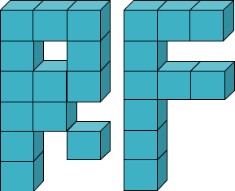

Skip to main content
Back to top
Ctrl
+
K

User Guide
R&D
Capabilities
API
Community
More
Support Us
About Us
Release Notes
GitHub
Website
LinkedIn
User Guide
R&D
Capabilities
API
Community
Support Us
About Us
Release Notes
GitHub
Website
LinkedIn
Section Navigation
fluids
Fluid
reservoirflow.fluids.Fluid.factors
reservoirflow.fluids.Fluid.name
reservoirflow.fluids.Fluid.unit
reservoirflow.fluids.Fluid.units
reservoirflow.fluids.Fluid.allow_synonyms
reservoirflow.fluids.Fluid.report
reservoirflow.fluids.Fluid.set_comp
reservoirflow.fluids.Fluid.set_units
SinglePhase
reservoirflow.fluids.SinglePhase.factors
reservoirflow.fluids.SinglePhase.name
reservoirflow.fluids.SinglePhase.unit
reservoirflow.fluids.SinglePhase.units
reservoirflow.fluids.SinglePhase.allow_synonyms
reservoirflow.fluids.SinglePhase.report
reservoirflow.fluids.SinglePhase.set_B
reservoirflow.fluids.SinglePhase.set_comp
reservoirflow.fluids.SinglePhase.set_mu
reservoirflow.fluids.SinglePhase.set_props
reservoirflow.fluids.SinglePhase.set_rho
reservoirflow.fluids.SinglePhase.set_units
TwoPhase
reservoirflow.fluids.TwoPhase.factors
reservoirflow.fluids.TwoPhase.name
reservoirflow.fluids.TwoPhase.unit
reservoirflow.fluids.TwoPhase.units
reservoirflow.fluids.TwoPhase.allow_synonyms
reservoirflow.fluids.TwoPhase.report
reservoirflow.fluids.TwoPhase.set_comp
reservoirflow.fluids.TwoPhase.set_units
ThreePhase
reservoirflow.fluids.ThreePhase.factors
reservoirflow.fluids.ThreePhase.name
reservoirflow.fluids.ThreePhase.unit
reservoirflow.fluids.ThreePhase.units
reservoirflow.fluids.ThreePhase.allow_synonyms
reservoirflow.fluids.ThreePhase.report
reservoirflow.fluids.ThreePhase.set_comp
reservoirflow.fluids.ThreePhase.set_units
MultiPhase
reservoirflow.fluids.MultiPhase.factors
reservoirflow.fluids.MultiPhase.name
reservoirflow.fluids.MultiPhase.unit
reservoirflow.fluids.MultiPhase.units
reservoirflow.fluids.MultiPhase.allow_synonyms
reservoirflow.fluids.MultiPhase.report
reservoirflow.fluids.MultiPhase.set_comp
reservoirflow.fluids.MultiPhase.set_units
grids
Grid
reservoirflow.grids.Grid.factors
reservoirflow.grids.Grid.name
reservoirflow.grids.Grid.unit
reservoirflow.grids.Grid.units
reservoirflow.grids.Grid.allow_synonyms
reservoirflow.grids.Grid.report
reservoirflow.grids.Grid.set_comp
reservoirflow.grids.Grid.set_units
RegularCartesian
reservoirflow.grids.RegularCartesian.factors
reservoirflow.grids.RegularCartesian.is_anisotropic
reservoirflow.grids.RegularCartesian.is_heterogeneous
reservoirflow.grids.RegularCartesian.is_homogeneous
reservoirflow.grids.RegularCartesian.is_irregular
reservoirflow.grids.RegularCartesian.is_isotropic
reservoirflow.grids.RegularCartesian.is_regular
reservoirflow.grids.RegularCartesian.name
reservoirflow.grids.RegularCartesian.unit
reservoirflow.grids.RegularCartesian.units
reservoirflow.grids.RegularCartesian.allow_synonyms
reservoirflow.grids.RegularCartesian.extract_boundaries
reservoirflow.grids.RegularCartesian.get_D
reservoirflow.grids.RegularCartesian.get_Vt
reservoirflow.grids.RegularCartesian.get_boundaries
reservoirflow.grids.RegularCartesian.get_cell_A
reservoirflow.grids.RegularCartesian.get_cell_Ax
reservoirflow.grids.RegularCartesian.get_cell_Ay
reservoirflow.grids.RegularCartesian.get_cell_Az
reservoirflow.grids.RegularCartesian.get_cell_G
reservoirflow.grids.RegularCartesian.get_cell_V
reservoirflow.grids.RegularCartesian.get_cell_boundaries
reservoirflow.grids.RegularCartesian.get_cell_center
reservoirflow.grids.RegularCartesian.get_cell_coords
reservoirflow.grids.RegularCartesian.get_cell_d
reservoirflow.grids.RegularCartesian.get_cell_dx
reservoirflow.grids.RegularCartesian.get_cell_dy
reservoirflow.grids.RegularCartesian.get_cell_dz
reservoirflow.grids.RegularCartesian.get_cell_icoords
reservoirflow.grids.RegularCartesian.get_cell_id
reservoirflow.grids.RegularCartesian.get_cell_k
reservoirflow.grids.RegularCartesian.get_cell_kx
reservoirflow.grids.RegularCartesian.get_cell_ky
reservoirflow.grids.RegularCartesian.get_cell_kz
reservoirflow.grids.RegularCartesian.get_cell_neighbors
reservoirflow.grids.RegularCartesian.get_cells_A
reservoirflow.grids.RegularCartesian.get_cells_Ax
reservoirflow.grids.RegularCartesian.get_cells_Ay
reservoirflow.grids.RegularCartesian.get_cells_Az
reservoirflow.grids.RegularCartesian.get_cells_G
reservoirflow.grids.RegularCartesian.get_cells_G_diag_1
reservoirflow.grids.RegularCartesian.get_cells_G_diag_2
reservoirflow.grids.RegularCartesian.get_cells_G_diag_3
reservoirflow.grids.RegularCartesian.get_cells_V
reservoirflow.grids.RegularCartesian.get_cells_center
reservoirflow.grids.RegularCartesian.get_cells_coords
reservoirflow.grids.RegularCartesian.get_cells_d
reservoirflow.grids.RegularCartesian.get_cells_dx
reservoirflow.grids.RegularCartesian.get_cells_dy
reservoirflow.grids.RegularCartesian.get_cells_dz
reservoirflow.grids.RegularCartesian.get_cells_i
reservoirflow.grids.RegularCartesian.get_cells_icoords
reservoirflow.grids.RegularCartesian.get_cells_id
reservoirflow.grids.RegularCartesian.get_cells_k
reservoirflow.grids.RegularCartesian.get_corners
reservoirflow.grids.RegularCartesian.get_fdir
reservoirflow.grids.RegularCartesian.get_fshape
reservoirflow.grids.RegularCartesian.get_n
reservoirflow.grids.RegularCartesian.get_n_max
reservoirflow.grids.RegularCartesian.get_ones
reservoirflow.grids.RegularCartesian.get_order
reservoirflow.grids.RegularCartesian.get_prop
reservoirflow.grids.RegularCartesian.get_pyvista_grid
reservoirflow.grids.RegularCartesian.get_shape
reservoirflow.grids.RegularCartesian.get_zeros
reservoirflow.grids.RegularCartesian.remove_boundaries
reservoirflow.grids.RegularCartesian.report
reservoirflow.grids.RegularCartesian.set_cell_value
reservoirflow.grids.RegularCartesian.set_comp
reservoirflow.grids.RegularCartesian.set_prop
reservoirflow.grids.RegularCartesian.set_props
reservoirflow.grids.RegularCartesian.set_units
reservoirflow.grids.RegularCartesian.show
Radial
reservoirflow.grids.Radial.factors
reservoirflow.grids.Radial.name
reservoirflow.grids.Radial.unit
reservoirflow.grids.Radial.units
reservoirflow.grids.Radial.allow_synonyms
reservoirflow.grids.Radial.report
reservoirflow.grids.Radial.set_comp
reservoirflow.grids.Radial.set_units
IrregularCartesian
reservoirflow.grids.IrregularCartesian.factors
reservoirflow.grids.IrregularCartesian.name
reservoirflow.grids.IrregularCartesian.unit
reservoirflow.grids.IrregularCartesian.units
reservoirflow.grids.IrregularCartesian.allow_synonyms
reservoirflow.grids.IrregularCartesian.report
reservoirflow.grids.IrregularCartesian.set_comp
reservoirflow.grids.IrregularCartesian.set_units
wells
Well
reservoirflow.wells.Well.factors
reservoirflow.wells.Well.name
reservoirflow.wells.Well.unit
reservoirflow.wells.Well.units
reservoirflow.wells.Well.report
reservoirflow.wells.Well.set_units
SingleCell
reservoirflow.wells.SingleCell.factors
reservoirflow.wells.SingleCell.name
reservoirflow.wells.SingleCell.unit
reservoirflow.wells.SingleCell.units
reservoirflow.wells.SingleCell.allow_synonyms
reservoirflow.wells.SingleCell.report
reservoirflow.wells.SingleCell.set_cell_id
reservoirflow.wells.SingleCell.set_constrain
reservoirflow.wells.SingleCell.set_props
reservoirflow.wells.SingleCell.set_q
reservoirflow.wells.SingleCell.set_r
reservoirflow.wells.SingleCell.set_s
reservoirflow.wells.SingleCell.set_units
MultiCell
reservoirflow.wells.MultiCell.factors
reservoirflow.wells.MultiCell.name
reservoirflow.wells.MultiCell.unit
reservoirflow.wells.MultiCell.units
reservoirflow.wells.MultiCell.report
reservoirflow.wells.MultiCell.set_units
Directional
reservoirflow.wells.Directional.factors
reservoirflow.wells.Directional.name
reservoirflow.wells.Directional.unit
reservoirflow.wells.Directional.units
reservoirflow.wells.Directional.report
reservoirflow.wells.Directional.set_units
models
Model
reservoirflow.models.Model.factors
reservoirflow.models.Model.name
reservoirflow.models.Model.unit
reservoirflow.models.Model.units
reservoirflow.models.Model.allow_synonyms
reservoirflow.models.Model.compile
reservoirflow.models.Model.get_solutions
reservoirflow.models.Model.report
reservoirflow.models.Model.run
reservoirflow.models.Model.set_comp
reservoirflow.models.Model.set_solution
reservoirflow.models.Model.set_units
reservoirflow.models.Model.solve
BlackOil
reservoirflow.models.BlackOil.factors
reservoirflow.models.BlackOil.name
reservoirflow.models.BlackOil.unit
reservoirflow.models.BlackOil.units
reservoirflow.models.BlackOil.allow_synonyms
reservoirflow.models.BlackOil.compile
reservoirflow.models.BlackOil.copy
reservoirflow.models.BlackOil.get_alpha
reservoirflow.models.BlackOil.get_cell_trans
reservoirflow.models.BlackOil.get_cells_trans
reservoirflow.models.BlackOil.get_cells_trans_diag
reservoirflow.models.BlackOil.get_centers
reservoirflow.models.BlackOil.get_df
reservoirflow.models.BlackOil.get_domain
reservoirflow.models.BlackOil.get_init_arrays
reservoirflow.models.BlackOil.get_shape
reservoirflow.models.BlackOil.get_solutions
reservoirflow.models.BlackOil.get_time
reservoirflow.models.BlackOil.plot
reservoirflow.models.BlackOil.plot_grid
reservoirflow.models.BlackOil.report
reservoirflow.models.BlackOil.run
reservoirflow.models.BlackOil.save_gif
reservoirflow.models.BlackOil.set_all_boundaries
reservoirflow.models.BlackOil.set_boundaries
reservoirflow.models.BlackOil.set_boundary
reservoirflow.models.BlackOil.set_comp
reservoirflow.models.BlackOil.set_scalers
reservoirflow.models.BlackOil.set_solution
reservoirflow.models.BlackOil.set_units
reservoirflow.models.BlackOil.set_well
reservoirflow.models.BlackOil.show
reservoirflow.models.BlackOil.solve
reservoirflow.models.BlackOil.update_scalers
Compositional
reservoirflow.models.Compositional.factors
reservoirflow.models.Compositional.name
reservoirflow.models.Compositional.unit
reservoirflow.models.Compositional.units
reservoirflow.models.Compositional.allow_synonyms
reservoirflow.models.Compositional.compile
reservoirflow.models.Compositional.get_solutions
reservoirflow.models.Compositional.report
reservoirflow.models.Compositional.run
reservoirflow.models.Compositional.set_comp
reservoirflow.models.Compositional.set_solution
reservoirflow.models.Compositional.set_units
reservoirflow.models.Compositional.solve
Thermal
reservoirflow.models.Thermal.factors
reservoirflow.models.Thermal.name
reservoirflow.models.Thermal.unit
reservoirflow.models.Thermal.units
reservoirflow.models.Thermal.allow_synonyms
reservoirflow.models.Thermal.compile
reservoirflow.models.Thermal.get_solutions
reservoirflow.models.Thermal.report
reservoirflow.models.Thermal.run
reservoirflow.models.Thermal.set_comp
reservoirflow.models.Thermal.set_solution
reservoirflow.models.Thermal.set_units
reservoirflow.models.Thermal.solve
solutions
Compiler
Solution
reservoirflow.solutions.Solution.run
reservoirflow.solutions.Solution.solve
analytical
D1P1
reservoirflow.solutions.analytical.D1P1.name
reservoirflow.solutions.analytical.D1P1.calc_solution
reservoirflow.solutions.analytical.D1P1.run
reservoirflow.solutions.analytical.D1P1.solve
D1P2
reservoirflow.solutions.analytical.D1P2.name
reservoirflow.solutions.analytical.D1P2.run
reservoirflow.solutions.analytical.D1P2.solve
D1P3
reservoirflow.solutions.analytical.D1P3.name
reservoirflow.solutions.analytical.D1P3.run
reservoirflow.solutions.analytical.D1P3.solve
D2P1
reservoirflow.solutions.analytical.D2P1.name
reservoirflow.solutions.analytical.D2P1.run
reservoirflow.solutions.analytical.D2P1.solve
D2P2
reservoirflow.solutions.analytical.D2P2.name
reservoirflow.solutions.analytical.D2P2.run
reservoirflow.solutions.analytical.D2P2.solve
D2P3
reservoirflow.solutions.analytical.D2P3.name
reservoirflow.solutions.analytical.D2P3.run
reservoirflow.solutions.analytical.D2P3.solve
D3P1
reservoirflow.solutions.analytical.D3P1.name
reservoirflow.solutions.analytical.D3P1.run
reservoirflow.solutions.analytical.D3P1.solve
D3P2
reservoirflow.solutions.analytical.D3P2.name
reservoirflow.solutions.analytical.D3P2.run
reservoirflow.solutions.analytical.D3P2.solve
D3P3
reservoirflow.solutions.analytical.D3P3.name
reservoirflow.solutions.analytical.D3P3.run
reservoirflow.solutions.analytical.D3P3.solve
neurical
PINN
reservoirflow.solutions.neurical.PINN.name
reservoirflow.solutions.neurical.PINN.fit
reservoirflow.solutions.neurical.PINN.run
reservoirflow.solutions.neurical.PINN.solve
DeepONet
reservoirflow.solutions.neurical.DeepONet.name
reservoirflow.solutions.neurical.DeepONet.run
reservoirflow.solutions.neurical.DeepONet.solve
numerical
FDM
reservoirflow.solutions.numerical.FDM.name
reservoirflow.solutions.numerical.FDM.check_MB
reservoirflow.solutions.numerical.FDM.get_cell_eq
reservoirflow.solutions.numerical.FDM.get_cells_eq
reservoirflow.solutions.numerical.FDM.get_matrices_symb
reservoirflow.solutions.numerical.FDM.get_matrices_vect
reservoirflow.solutions.numerical.FDM.run
reservoirflow.solutions.numerical.FDM.solve
FVM
reservoirflow.solutions.numerical.FVM.name
reservoirflow.solutions.numerical.FVM.run
reservoirflow.solutions.numerical.FVM.solve
FEM
reservoirflow.solutions.numerical.FEM.name
reservoirflow.solutions.numerical.FEM.run
reservoirflow.solutions.numerical.FEM.solve
solvers
reservoirflow.solutions.numerical.solvers.get_dsolver
reservoirflow.solutions.numerical.solvers.get_isolver
scalers
Scaler
reservoirflow.scalers.Scaler.name
reservoirflow.scalers.Scaler.fit
reservoirflow.scalers.Scaler.fit_transform
reservoirflow.scalers.Scaler.inverse_transform
reservoirflow.scalers.Scaler.set_output_range
reservoirflow.scalers.Scaler.transform
Dummy
reservoirflow.scalers.Dummy.name
reservoirflow.scalers.Dummy.fit
reservoirflow.scalers.Dummy.fit_transform
reservoirflow.scalers.Dummy.inverse_transform
reservoirflow.scalers.Dummy.set_output_range
reservoirflow.scalers.Dummy.transform
MinMax
reservoirflow.scalers.MinMax.name
reservoirflow.scalers.MinMax.fit
reservoirflow.scalers.MinMax.fit_transform
reservoirflow.scalers.MinMax.inverse_transform
reservoirflow.scalers.MinMax.set_output_range
reservoirflow.scalers.MinMax.transform
utils
helpers
reservoirflow.utils.helpers.fshape_warn
reservoirflow.utils.helpers.get_boundary_str
reservoirflow.utils.helpers.get_fshape_str
reservoirflow.utils.helpers.get_points_str
reservoirflow.utils.helpers.get_verbose_str
reservoirflow.utils.helpers.intersection
reservoirflow.utils.helpers.isin
reservoirflow.utils.helpers.ispoints
reservoirflow.utils.helpers.issametype
reservoirflow.utils.helpers.lru_cache
reservoirflow.utils.helpers.reformat
reservoirflow.utils.helpers.remove_diag
reservoirflow.utils.helpers.shape_error
profme
reservoirflow.utils.profme.cProfiler
reservoirflow.utils.profme.lProfiler
reservoirflow.utils.profme.profile
reservoirflow.utils.profme.timeit
pyvista
reservoirflow.utils.pyvista.add_desc
reservoirflow.utils.pyvista.add_grid_labels
reservoirflow.utils.pyvista.add_ruler
reservoirflow.utils.pyvista.add_title
reservoirflow.utils.pyvista.add_wells
reservoirflow.utils.pyvista.align_camera
reservoirflow.utils.pyvista.decide_widget
reservoirflow.utils.pyvista.get_annotations
reservoirflow.utils.pyvista.get_cbar_dict
reservoirflow.utils.pyvista.get_cdir
reservoirflow.utils.pyvista.get_colormap
reservoirflow.utils.pyvista.get_grid_plotter
reservoirflow.utils.pyvista.get_limits_fmt
reservoirflow.utils.pyvista.get_model_plotter
reservoirflow.utils.pyvista.get_model_values
reservoirflow.utils.pyvista.get_text_locs
reservoirflow.utils.pyvista.get_window_size
reservoirflow.utils.pyvista.save_gif
reservoirflow.utils.pyvista.set_background_color
reservoirflow.utils.pyvista.set_mode
reservoirflow.utils.pyvista.set_plotter_backend
reservoirflow.utils.pyvista.set_plotter_config
reservoirflow.utils.pyvista.set_text_color
reservoirflow.utils.pyvista.show_grid
reservoirflow.utils.pyvista.show_model
backends
Backend
reservoirflow.backends.Backend.ones
reservoirflow.backends.Backend.transpose
NumPy
reservoirflow.backends.NumPy.name
reservoirflow.backends.NumPy.ones
reservoirflow.backends.NumPy.transpose
PyTorch
reservoirflow.backends.PyTorch.name
reservoirflow.backends.PyTorch.ones
reservoirflow.backends.PyTorch.transpose
TensorFlow
reservoirflow.backends.TensorFlow.name
reservoirflow.backends.TensorFlow.ones
reservoirflow.backends.TensorFlow.transpose
JAX
reservoirflow.backends.JAX.name
reservoirflow.backends.JAX.ones
reservoirflow.backends.JAX.transpose
API
SingleCell
reservoirflo...
reservoirflow.wells.SingleCell.set_s
#
SingleCell.
set_s
(
s
)
#
On this page
set_s()